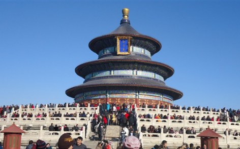
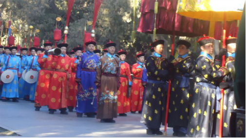
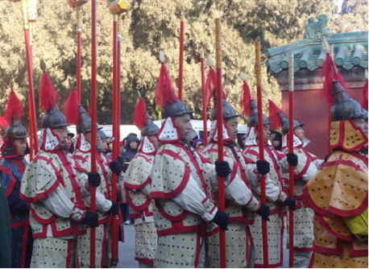
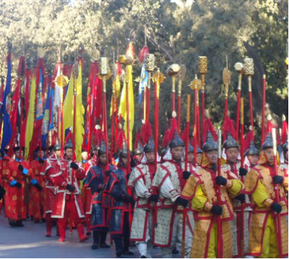
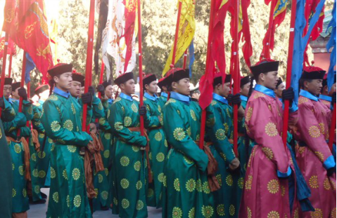
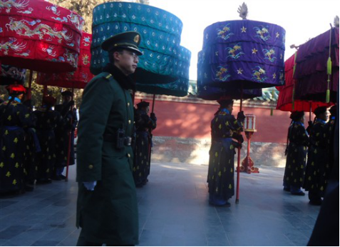
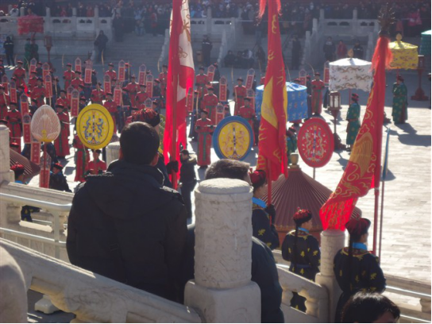
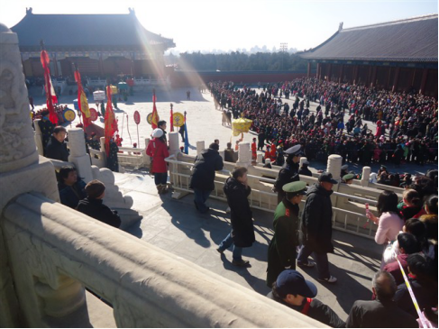

天坛建于公元15世纪上半叶，是世界文化遗产，全国重点文物保护单位，国家5A级旅游景区，全国文明风景旅游区示范点。
天坛坐落在皇家园林，是明、清两代皇帝“祭天”“祈谷”的场所，这座保存完好的坛庙建筑群，无论在整体布局还是单一建筑上，都反映出天地之间的关系。
坛域北呈圆形，南为方形，寓意“天圆地方”。四周环筑坛墙两道，把全坛分为内坛、外坛两部分，总面积273公顷，主要建筑集中于内坛。
2011年春节，我和小美同学去北京，正好碰上天坛公园奉献给首都人民和海内外游客一份节日大礼——天坛第七届文化周。
文化周期间推出以天坛祭天礼乐文化为特色的表演展示项目，同时首次面向游客开展斋宫敲钟祈福活动，艺术地再现了中国古代祭天 情景，我和小美同学有幸亲身体验了古代皇帝祭天的盛大场面。
我和小美同学早早地就在路边抢到一个好的位置，可以近距离观看，这场依照清乾隆十三年的祭天仪仗和祭天乐舞表演。
公园里的大喇叭里传出播音员的讲解声，祭天仪式开始了。
声声号角声中，只见由320名演员组成的祭天仪仗队伍，从天坛的西天门到祈年殿南砖门，一路缓缓行进。
祭天仪仗队阵容浩大庄严，大喇叭里不时传出播音员的讲解，我们才知道这些列队是在一一展示静鞭、罡铜、兵器、旌旗、幡幢、宫扇、伞盖、金八件等仪仗器物。
长长的仪仗队伍一眼望不到头，只见皇帝、太监、百官、八旗武士、内廷侍从等历史人物缓缓从眼前经过，其中还穿插有鸣静鞭、跪拜迎驾等表演环节。
小美同学看到这些仿佛从古代穿越而来的仪仗队，被这能以假乱真的场景震撼到了，在一边看得是目瞪口呆。
她不停地翘首向队伍后面望去，想看看皇帝到底长得什么样，帅不帅，和电视上她看过的那些皇帝有没有区别。
终于，远远地看见金黄色的伞盖出现了，一身龙袍的皇帝在一干文武大臣的簇拥下慢慢走了过来。
小美同学很是兴奋，如果不是有武警在场，我猜她准会跑到皇帝跟前要合影了。可惜，由于维护治安的执勤武警太多，挡住了视线，没拍到皇帝的正脸。
看着皇帝的背影，小美同学还在感叹，这皇帝好帅啊！跟电视上看到的一样！
仪仗队簇拥着皇帝来到天坛祈年殿，随后，祭天乐舞开始在祈年殿院内进行表演，皇帝行至祁年殿门口祈福。
皇帝在歌声舞影中向上天敬酒致意，完成，初献，亚献，终谳三部分，表达风调雨顺、国泰民安的祝福。
同时128名乐舞生通过武功舞和文德舞，寓意文治武功，天下太平。
祭天仪式完成之后，皇上起驾，文武大臣列队送驾，浩浩荡荡地仪仗队伍又原路返回皇帝来时的斋宫。
通过这次天坛之行，我和小美同学算是开了眼界，亲身经历了一场古代皇帝祭天的场景，真正感受到了中国古代博大精深的礼乐文化魅力。